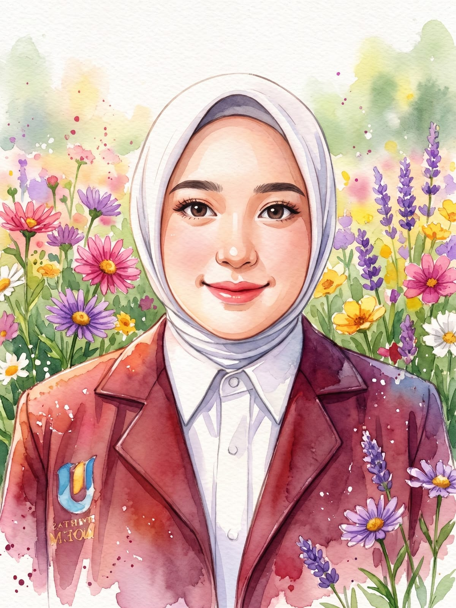

Hello, I'm
Raisha Azahra!
Welcome to my little universe! I'm a student of Information Systems who enjoys learning new things, exploring creativity, and discovering the world through technology.
This little corner of the internet is where I collect my stories, memories, dreams, and little pieces of myself.
A Little About Me
Some little details about the person behind this website.
My Name
Raisha Azahra
My Study
Sistem Informasi
My Status
University Student
Experiences & Projects
Little experiences that became part of my journey.
OSIS Secretary
I had the opportunity to become a secretary in the student council during junior high school. It taught me about responsibility, teamwork, and organization.
- Managing organizational administration
- Preparing letters and documents
- Recording meeting minutes
Helpdesk IT Website
During my vocational school internship, I developed my own Helpdesk IT website. This project became one of my learning experiences in applying technology to solve practical needs.
- Developing a website independently
- Learning website development
- Exploring IT service solutions
My Learning Corner
Technologies and skills I'm currently exploring.
Every day is another opportunity to learn something new.
A Letter to Myself
"I believe that every little step brings me closer to the person I want to become. I may not have everything figured out yet, but I'm willing to learn, grow, and keep discovering what I'm capable of. This is my little universe, a place where I keep my memories, dreams, and stories."
With love, Raisha ♡